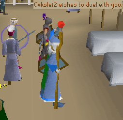
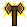
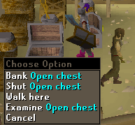
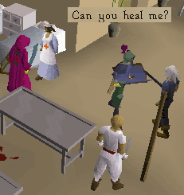
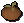
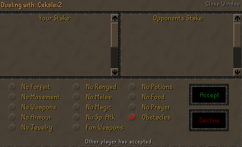
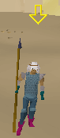
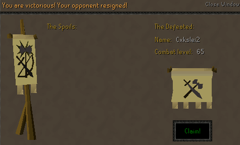
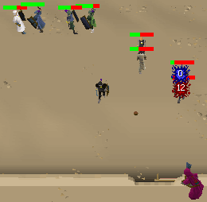

Duel Arena
If you'd like to fight with other players without the risk of losing everything that you're wearing, the Duel Arena is the place to go! You can set your own Dueling rules, fight in different terrain, and even throw Tomatoes at other dueling players.
The Basics
Members have the ability to duel with other players in the Duel Arena, located just northeast of Al Kharid and east of Lumbridge. A map of the area may also be helpful. The Duel Arena is the only place in RuneScape that you can duel another player, as you are unable to duel outside of the arena.
Just outside of the arena is an Instructor who will tell you about the arena and how it works.

Challenging a Player

While in the Duel Arena, you'll see a small icon that looks like a fiery axe in the bottom right corner of the game screen. When you see that icon, you will be able to challenge any player in the arena to a duel. To challenge someone, just right-click on them and choose the 'Duel-With Player' option. If another player challenges you, you'll see the message 'Player wishes to duel with you.' You can then either accept or decline the duel. More info specific to Dueling can be found below.Arena Facilities
There are various facilities available to use in the Duel Arena, and many of them will

come in useful before and after your dueling matches.The Bank
You can deposit and withdraw any of your armor, weapons or other items from the chest in the northeast corner of the Duel Arena. You'll be ready for the next battle that awaits you by taking some food and your best gear!
The Prayer Altar
Of course, the arena is equipped with an altar for recharging your prayer. It can be

found in the north-most building of the arena, right near the Bank. Be sure to recharge your Prayer points before battle so that you can use Prayer in your next duel!The Hospital
You can't have a Dueling Arena without an infirmary! You'll find a hospital in the same building as the Prayer Altar, and the nurses there will heal your hitpoints back up. Be sure to speak to them if you've been hurt!
Tomato Shop

Right next to the bank is a Shop of Distaste where you can buy Rotten Tomatoes for 1gp each. There can be thrown at other players while watching them duel.Dueling!
Now that you know about the different places around the arena, it's time to learn about Dueling other players.
Starting a Duel
To begin a Duel, right click on another player and select the Duel option. Once the second player has accepted to duel with you, you'll be able to adjust the different options and stake any items that you wish to.

If you want stake any items (you don't need to), be sure that you aren't afraid to lose them in the event that you should lose the duel. Any items staked will be lost to the other player. There are also many rules that you can set to make the duel more interesting when turned on:
- No Forfeit - Neither player is able to resign (give up) from the duel. You will have to fight to the death!
- No Movement - You and your opponent will be unable to move.
- No Weapons - You and your opponent cannot use weapons. Fist-fight!
- No Armor - You and your opponent can't wear any armor.
- No Jewelry - Jewelry with power may not be worn by you or your opponent.
- No Ranged - You and your opponent can't use or wield any ranging equipment (like bows, throwing axes or knives); Melee & Magic allowed.
- No Melee - Neither player can use your hands to fight with; Ranged & Magic is allowed.
- No Magic - Magic can't be used by either player; Melee & Ranged is allowed.
- No Special Attacks - Neither player can use special attacks, if they have a weapon that can use 1.
- Fun Weapons - Special weapons like Flowers and other harmless weapons (like Holiday Items) can be used.
- No Potions - You and your opponent can't drink any potions.
- No Food - You and your opponent cannot eat any food.
- No Prayer - Neither player is able to use Prayer.
- Obstacles - these are helpful for Mages and Rangers to put a barrier between you and your opponent. These are explained below.
After accepting these rules, you'll see a confirmation screen of anything being staked, as well as the options that have been agreed upon. Double check these and then select 'Accept' to begin the duel!
Kinds of Arenas
There are 2 different arenas for fighting in. First, there's a regular arena with a simple and sandy floor. There are no obstacles or things to get in the way, so this arena is to the advantage of melee people.
There is also an obstacle arena, which can be chosen in the Dueling options screen by selecting the "Obstacles" option. Here, Archers and Mages have the advantage, for they can hide behind the walls and fire away with their spells or arrows while you

take damage and they do not.The Duel
Once both players agree to the rules that are set, the duel will begin. You'll appear in the arena, ready for combat. Your opponent always starts off away from you, and they'll have a yellow start pointing down at them like in the picture to the right. After they count down to 0, the duel will start and they'll come rushing at you!
Now you and your opponent can fight. The only way to leave is either by being defeated, or by escaping through 1 of the trapdoors on the sides of the arena, if forfeiting is allowed.
Winning & Losing
The spoils are what you win from the duel, such as items or cash that your opponent staked before the duel. When you win, you'll see a screen like this:

When you lose a duel, you will get nothing. The items that you staked before the duel will go to the other player as their spoils, and no winning screen will show up. Either way, both you and your opponent will end up in the infirmary, with all of your stats recharged back to 100%.
Watching Duels

If you're tired of fighting in Duels, or if you just want to watch some players duel, you can watch from the walkways above the actual duel area. But before you go, be sure to spend a few gps on Rotten Tomatoes to show how much you like the duel!
Now just lean against a wall to watch the duels in the arena below. You can click on a Rotten Tomato in your inventory and throw them at people (yum, fresh fruit)!